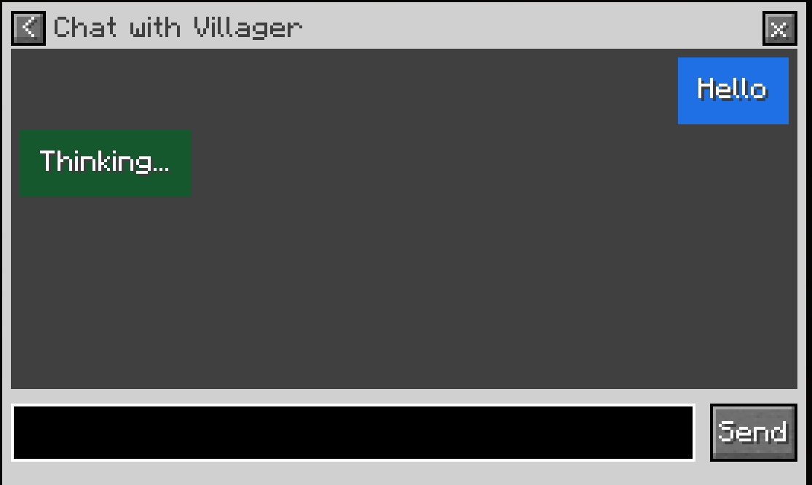
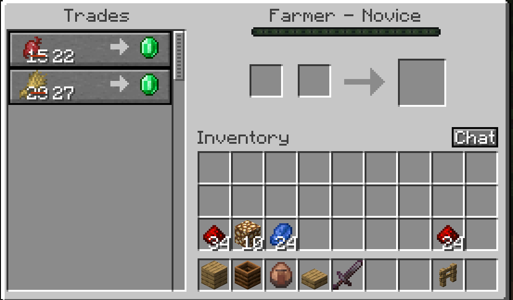

Give Minecraft villagers real-time, context-aware dialogue without breaking gameplay or safety.
Built with a two-model architecture — a local LLM for real-time dialogue, a cloud model for retrieval-augmented queries — plus a custom context pipeline and content guardrails for safe in-game interactions.


Predict mortality risk from demographic, vitals, and medical-history data to support fairer underwriting review.
Led development of the prediction pipeline end to end, from feature engineering across demographic, vitals, and medical-history data to model evaluation for underwriting accuracy and fairness.